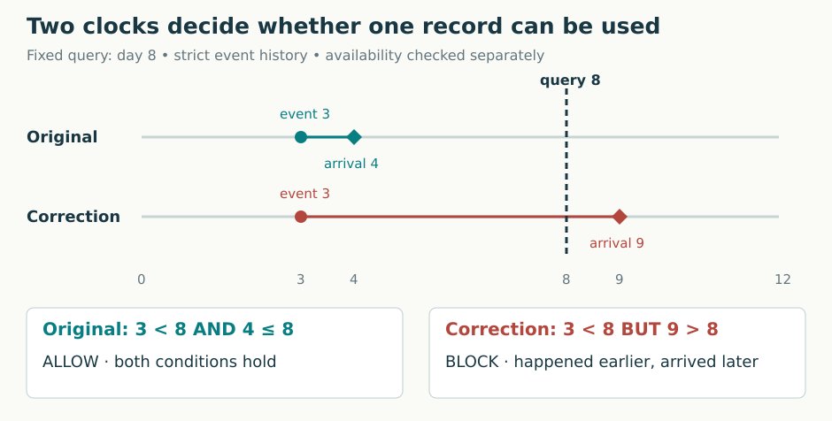
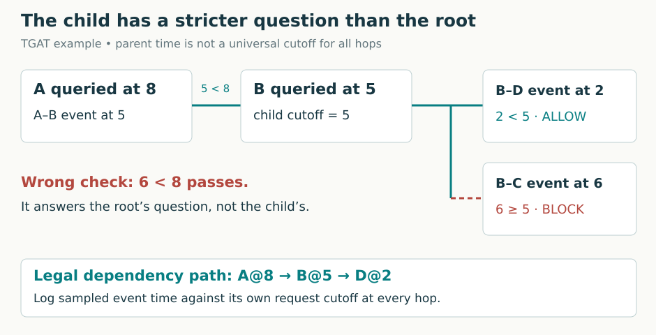
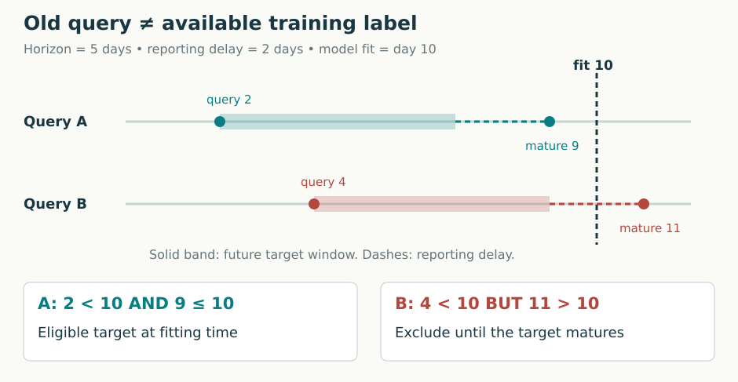
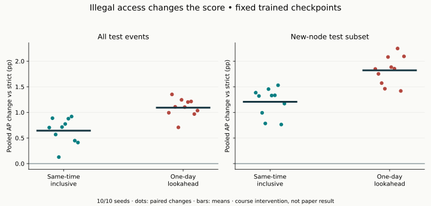

Year 3 · Quarter 3 · Lesson 104
Information leakage in time: audit the prediction
Your win: find a time-travel dependency, repair it, and defend the resulting metric. This is the evaluation discipline your relational-learning thesis depends on.
Start with the short audit below. Then follow one prediction through its inputs. The lab uses a trained Temporal Graph Attention (TGAT) model on real Wikipedia interactions; its full model and training recipe remain visible.
1 · Retrieval before reading¶
Without opening L103, answer these three questions:
- A query at time 8 reaches a neighbor through an interaction at time 5. At what time is that neighbor's historical representation queried?
- In TGN, may the current event update memory before the model predicts that same event?
- Does putting every test target after the training targets guarantee legal feature access?
Check after committing your answers
In TGAT, the child is queried at 5 and its event history is strictly earlier than 5. TGN must predict before incorporating the current outcome. A chronological target split alone cannot constrain joins, feature versions, sampled neighbors, memory, or model selection.
Where we are. L102 introduced persistent memory. L103 recomputed embeddings from history. Both still need an explicit rule for what was knowable. A timestamp inside a neural network does not enforce that rule.
2 · First define the prediction moment¶
In plain terms. Imagine stopping the application immediately before it must answer. Which records could it read at that instant?
A prediction query names an entity or candidate pair and a prediction time, τ. Event time, s, says when something happened. Availability time, a, says when the predictor could first read that record or feature version. A delayed report can have s < τ but a > τ.
For this lesson's before-event prediction task, a historical record is eligible when:
s < τ and a ≤ τ.
The first inequality excludes the event being predicted and all timestamp ties. The second excludes late arrivals. We assume a record stamped available at τ has been committed before the query; systems with different tie ordering need a stricter rule or an explicit sequence number. A time zone conversion cannot recover missing ordering information.
Worked example. Predict at day 8. An interaction occurred at day 3 and was received at day 4: legal. A correction describes day 3 but was received at day 9: illegal. An event occurring at day 8 is also excluded under this task's strict-before convention. Select the historical feature version that existed then, not today's overwritten value.

Predict the control. At query day 8, moving the correction's arrival from day 9 to day 7 should change its eligibility even though its event date stays day 3. The default worked state above remains the comparison baseline.
Different tasks can have different boundaries¶
Fey et al.'s relational blueprint uses query timestamps to build time-consistent computation graphs and describes entity timestamps up to the query time. TGAT reconstructs event history strictly before a query, including recursive child requests. These are task conventions, not interchangeable punctuation. A database snapshot prediction can legitimately read a committed row at its cutoff; an interaction predictor cannot read its own target event. See Fey §§2.2–3.3 and Appendix A and TGAT §3.2.
Scope check. Wikipedia provides event timestamps, not ingestion histories or historical feature versions. Our real-data experiment assumes availability equals event time. The delayed-arrival examples are diagnostic fixtures, not measured Wikipedia delays.
3 · A legal root can hide an illegal child¶
A computation graph is the set of records and intermediate calculations actually used to produce one prediction. A temporal neighborhood is the eligible incident-event history retrieved for a node at its current cutoff.
Worked example. Query A at time 8. An A–B event at time 5 is legal. TGAT next needs B's representation at time 5. A B–C event at time 6 is earlier than the root time 8, but later than the child time 5. Filtering every hop against 8 would leak into the historical representation of B.

The rule belongs to every recursive request. TGAT sends the connecting event time to its child. For this event-recursive computation, legal times decrease along the path: 8 → 5 → 2. A 6 on the second hop violates the child boundary. Other temporal architectures may define a snapshot neighborhood at one root time; audit the model's actual contract before transferring TGAT's recursion rule to them.
The full path being audited: candidate endpoints and τ → sampled histories → two shared TGAT attention layers → two 172-dimensional endpoint vectors → pair decoder → a probability. Time and edge features enter attention. The graph sampler therefore controls which evidence can influence both the positive candidate and its negative comparison. The complete encoder and trainer are provided in the notebook; this lesson changes the sampler, not that architecture.
State and caches are also inputs¶
For TGN, a memory vector is a summary of prior observations. Audit the events that entered it, including pending messages. Predicting an event after incorporating its outcome is a dependency violation even if the input tensor carries an older timestamp. Likewise, a cached embedding (a computed vector for an entity) keyed only by node ID can accidentally serve a vector computed from later history. Include the cutoff and relevant data/model version in cache identity, or show that the cached representation is valid for every requested time.
Check: a model contains no recurrent memory. Is it immune? No: TGAT can leak through its retrieved neighborhood or raw feature versions.
4 · Labels and selection have their own clocks¶
In plain terms. A label can describe the future of an old query and still be unavailable when you fit the model.
A prediction horizon is the future interval whose outcome defines the target. Label maturity is when that entire outcome, including reporting delay, can be known. For a horizon H and delay d, a simple target matures at τ + H + d. This formula assumes both are known and fixed; real tasks may require a recorded maturity timestamp.
Worked example. Fit on day 10. Query day 4 predicts activity over the next 5 days, with a 2-day reporting delay. Its target matures on day 11. Despite the old query date, that target is unavailable at fitting time. A query from day 2 with the same horizon and delay matures on day 9 and is eligible.

Our training audit requires query time < fit time and label-availability time ≤ fit time. An embargo, a gap between splits, can help implement this for fixed horizons. A guessed gap does not prove every target has matured. Check the actual label clock.
A checkpoint is a saved model state. Model selection chooses a state or setting using measured performance. Suppose the model will serve on day 20. Selecting it using validation outcomes that mature on day 25 uses knowledge unavailable on day 20. Sorting the test table cannot repair that choice. Record when training labels, validation outcomes, fitted preprocessors and the chosen model all became available.
In a declared online evaluation, earlier observed test events may legitimately become history for later predictions. Test labels cannot silently become fitting or selection inputs. State whether the service observes interactions after they occur, whether updates happen per event or per batch, and when it is retrained.
5 · Turn the claim into an audit¶
Kapoor and Narayanan distinguish temporal evaluation mismatch, illegitimate features, and contamination between training and test processing. Their model-info-sheet approach asks for reasons that the measured task supports the scientific claim. Here we specialize that reasoning to a temporal graph; we are not reproducing their civil-war experiments.
| Inspect | Counterexample to look for | Evidence of repair |
|---|---|---|
| Input versions | A backfilled attribute describes an old event but arrived later | Historical version and availability checks |
| Every sampled hop | Child time 5 reads event time 6 | Sampled dependency log against each child cutoff |
| Current interaction | The candidate edge enters its own history | Equal-time fixture plus sampled-event audit |
| Memory and caches | State from a later query is reused earlier | Replay from legal state; cutoff-aware cache identity |
| Fitting targets | Old query has an unmatured target | Query and label-availability masks |
| Selection and preprocessing | Future outcomes select an earlier deployed model | Fit/selection timestamps and untouched test labels |
| Metric comparison | Repair changes candidates or evaluated rows | Paired event IDs, negatives and aggregation |
An assertion is a condition the program checks and refuses to violate. A counterexample is one concrete case that disproves a proposed guarantee. Use both: trace one forbidden path, then test a broader boundary set including empty histories and timestamp ties. A high AP is not such a guarantee.
6 · The controlled Wikipedia experiment¶
Two experiments with different purposes¶
A. Released-evaluation replay. Restore each completed L103 checkpoint and its saved NumPy random state. Recompute the complete released all-test and new-node-test predictions. Check event IDs, negative destinations and every saved probability. This tests whether the published-experiment implementation and its archived output can be replayed. It reuses L103 training.
B. Leakage intervention. Keep that checkpoint fixed and ask the same prediction questions under three information-access rules:
| Arm | Allowed event history at each recursive cutoff c | Interpretation |
|---|---|---|
| Strict | s < c | Corrected course baseline |
| Inclusive | s ≤ c | Illegal same-time access for this task |
| Lookahead | s ≤ c + 86,400 seconds | Illegal one-day lookahead at every recursive request |
For a true interaction (u, v, t), inclusive history can contain that very interaction while the model is trying to predict it. A sampled negative pair often has no corresponding current edge. This can reveal part of the answer through graph structure.
These are inference interventions; no arm retrains the model. Negatives come from the archived evaluation, so the candidate pairs and labels stay fixed. Each sampler call draws a uniform matrix even when a node has no history. Resetting the seed for each arm then gives a common random-number schedule. The same uniforms may select different neighbors from changed eligible sets; holding neighbors identical would prevent the access intervention itself. Because the fanout (the number of samples per request) stays at 20 records, illegal records can also displace legitimate ones. That is part of this access-rule intervention and another reason the score need not rise.
The release sampler drops one eligible item and consumes random numbers differently on empty histories. Its historical baseline is therefore not the causal baseline for B. We separately compare each illegal arm to the corrected strict arm. Release early stopping, omitted last events, and batch-mean AP remain documented in the reproduction contract.
Read the actual sampler. uniforms is drawn before inspecting individual histories, so an empty row cannot shift later random draws. The audit compares each sampled timestamp to that request's cutoff; zero-padding slots do not count as historical records. The eligibility policy is the notebook's first TODO.
def get_temporal_neighbor(self, nodes, cutoffs, num_neighbors=20):
ids = np.zeros((len(nodes),num_neighbors), dtype=np.int32)
edges = np.zeros_like(ids); times = np.zeros(ids.shape, dtype=np.float32)
# Draw even for empty histories. This preserves the uniform schedule across arms.
uniforms = np.random.random((len(nodes),num_neighbors))
for i,(node,cutoff) in enumerate(zip(nodes,cutoffs)):
history = self.find_before(node,cutoff)
if not len(history):
continue
selected = history[np.floor(uniforms[i]*len(history)).astype(int)]
selected = selected[np.argsort(selected[:,2])]
ids[i], edges[i], times[i] = selected[:,0], selected[:,1], selected[:,2]
self.audit['sampled_records'] += len(selected)
self.audit['nonpast_records'] += int(np.sum(selected[:,2] >= cutoff))
self.audit['future_records'] += int(np.sum(selected[:,2] > cutoff))
self.audit['queries'] += len(nodes)
return ids, edges, times
What is measured?¶
Precision is the fraction of selected candidates that are positives. Recall is the fraction of all evaluated positives that have been selected. Average precision (AP) summarizes a ranking by averaging precision at recall increases. Higher scores for positives generally improve it, but tied scores are grouped. We use the implementation in the scikit-learn AP definition.
The released experiment reports an unweighted mean of per-batch AP. The intervention reports pooled AP, computed once over all positive and sampled-negative scores in one evaluation population. These aggregations can differ because AP is nonlinear. A percentage point (pp) is an absolute difference on the percentage scale: AP .90 to .92 is +2 pp. Our paired change is 100 × (AP_illegal − AP_strict).
Each positive has one sampled negative; occasional collisions are preserved from L103. This measures sampled-candidate discrimination, not ranking against every possible page. Candidate pools are inherited from the release and can use the full graph’s node roster; the strict sampler audit does not certify that roster was known to a deployed service. The new-node subset contains events with at least one endpoint absent from training. It overlaps the all-test population, so these are not independent replications.
Before revealing results: must illegal history improve AP? Write a direction for each arm and a reason. The trained model may respond poorly to inputs it never saw during training. An invalid information path stays invalid even when it reduces the metric.
Reveal the author measurements after making your prediction
Fresh evaluation: COMPLETE, 10/10 checkpoints. Training was reused from L103.
| Population | Strict pooled AP | Same-time AP change | One-day AP change |
|---|---|---|---|
| All test events | 95.8643% | +0.6431 ± 0.2538 pp | +1.0928 ± 0.1808 pp |
| New-node subset | 94.8299% | +1.2065 ± 0.2717 pp | +1.8212 ± 0.2765 pp |
± is sample SD across seeds, not a confidence interval. Released replay checked 353,340 positive events, each with one negative, with maximum probability error 0. Strict sampled nonpast accesses: 0.
Paper-target check (separate aggregation):
| Released population | Fresh batch-mean AP ± seed SD | Original paper target | Numerical verdict |
|---|---|---|---|
| All test events | 95.2825% ± 0.2784 pp | 95.34% | CLOSE |
| New-node subset | 93.7792% ± 0.3912 pp | 93.99% | CLOSE |
The predeclared ±0.5 pp numerical tolerance does not establish matching historical populations or full-paper parity. Historical identity INCOMPARABLE; full-paper parity NOT_ESTABLISHED. Machine-readable evidence.

A concrete detected bug. The instrumented seed-0 run requests node 3174 at time 2,218,300 seconds. The inclusive sampler reads edge 133854 at exactly 2,218,300. The lookahead sampler reads edge 133879 at 2,218,624—324 seconds after that request. Both violate this request's strict cutoff. Instrumentation left every checked prediction byte-identical; the witness log records these actual sampled dependencies. This log captures individual requests, not a reconstructed complete parent chain.
A causal repair check. On a small diagnostic graph, changing only future feature rows leaves strict predictions exactly unchanged. The lookahead positive control changes a probability by about 0.150. This separate metamorphic test validates a property of the sampler; its synthetic number is not a Wikipedia score.
The audit records sampled nonpast edges relative to the cutoff of each request. Counts include repeated samples and repeated recursive requests, not unique leaked database rows. The lookahead window resets at every hop; it is not a single root-level horizon. Strict zero violations establish this sampler's timestamp invariant, not a proof that the underlying features were historically available.
A random seed fixes a random generator’s starting state. Replaying its draws also requires matching the call order and runtime. Across-seed standard deviations describe checkpoint and sampling variation on this fixed graph and split. They do not measure uncertainty across future deployments or datasets. Negative examples differ across L103 seeds but are paired across arms within each seed. A result is evidence about this intervention, not a universal benefit of leakage.
7 · Lab: repair the boundary and defend the number¶
Open the student notebook or the prepared executed walkthrough. Try the three tasks before consulting the teacher solution.
- TODO — eligibility: implement event-time and availability-time filtering. CHECK empty histories, ties and late arrivals. Your function is called by the live neighborhood sampler.
- TODO — label maturity: decide which training targets were knowable at fitting time. CHECK that an old query can still have a future target.
- TODO — paired AP: reject mismatched event IDs, negative destinations or batches before computing the score difference. CHECK a deliberate negative-sample mismatch.
The default notebook evaluates 120 positive questions and 120 sampled negatives from one full-data trained checkpoint under each arm. This is a small execution exercise, distinct from the complete author evaluation. It downloads checksum-pinned data and a provided checkpoint when absent. The model and complete trainer are visible inline; the checkpoint is an explicit pretrained input.
EXIT — submit four things: the three functions; your measured AP table; one exact forbidden dependency (event time, cutoff and path); and a written defense of the repaired result. Explain why correct timestamp filtering cannot certify unknown arrival times. Explain which training was reused and which predictions you generated yourself. Status stays PENDING_WRITTEN_DEFENSE until you supply that evidence.
8 · Reproduce and extend¶
The reproduction contract contains pinned inputs, runtime, exact local/Modal commands, the budget, and deviations. It also links the complete L103 training recipe. Keep fresh evaluation, reused training, course interventions, and unrun paper coverage separate.
An adversarial extension: perturb every inaccessible future row while keeping accessible data fixed. For a strictly causal predictor, current outputs should remain unchanged when the random schedule is fixed. This is a metamorphic test: check how an output should respond to a controlled input transformation even when the exact output is unknown. It complements observed-edge audit logs; it does not replace availability provenance.
Read next: Kapoor & Narayanan's taxonomy and model-info-sheet sections, then Fey §§2.2–3.3. Reference card · Temporal glossary. Ask the tutor about any unclear boundary or paste your EXIT defense for review. Lesson 105 will ask how continuous-time event streams differ from snapshots; carry the prediction-time contract into that choice.